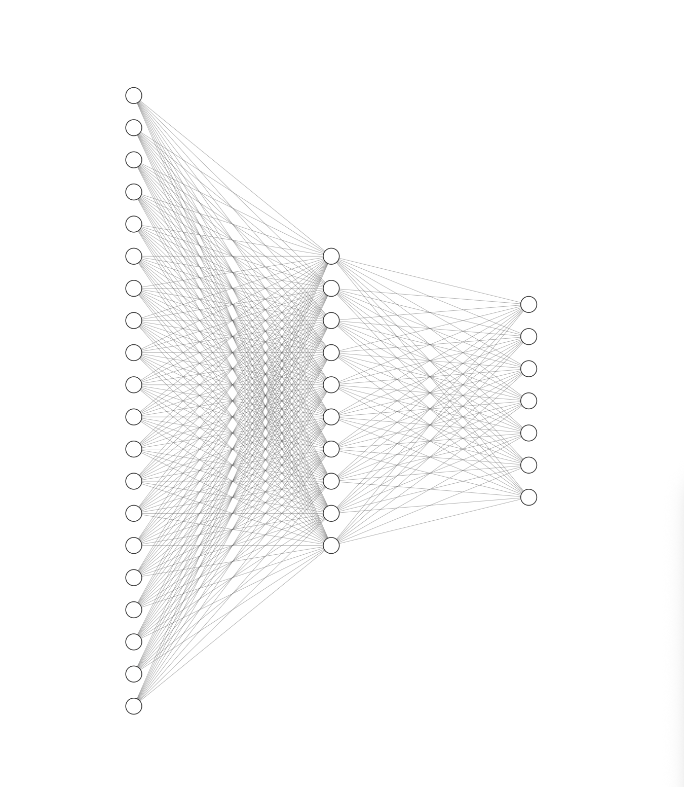
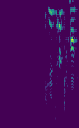
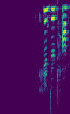

Upload Audio
OR
Record Audio
00:00
Analyzing audio…
--%
---
Learn more about this topic's research and applications
While classifying emotions in audio recordings may seem to not have real-world applications, this NIH article on the right explores the massive amount of research conducted in this field to make complex models for emotional analysis. This research is directly applicable in healthcare for diagnosing, treating, and monitoring patients with psychological and neurological conditions.
This sort of tool used in healthcare has the potential to save doctors' time (so they can focus on other aspects of patient care and treat more patients) by automating the tedious process of analyzing patients' emotions. Additionally, model performance on this task can surpass doctors', highlighting the need to design such a system for patient care:
"patients with conditions such as epilepsy, stroke, facial paralysis, facial numbness, and coma ... cannot express real emotions through objective external features (such as language and facial expressions) and autonomous behaviors. Therefore, it is necessary to design an automated system to effectively detect the emotions of such patients."
Upload an audio file or record your voice to classify its emotional content.
A fine-tuned speech emotion recognition model trained on the RAVDESS dataset.
Record live or upload a .wav / .mp3 file. The model accepts up to 10 MB of audio and works best with clear, single-speaker recordings.
The noisy raw audio data is converted into 768 features using Meta's HuBERT model.
A neural network processes the features and outputs a probability distribution across seven emotion classes: angry, disgusted, fearful, happy, neutral, sad, and surprised.
The top predicted emotion and its confidence score are displayed alongside a radar chart showing the full probability distribution across all seven classes.
This model first passes raw audio through a frozen, pretrained HuBERT model for feature extraction. HuBERT is a model that represents raw speech audio as a sequence of hidden units. You can find more information about HuBERT in the paper linked to the right. However, my model uses a frozen version of the HuBERT feature extractor, which takes raw, noisy audio as input and outputs a vector of 768 more meaningful features.

The extracted features are then fed into a classification head, a neural network with one hidden layer. This classification head is shown on the left, not to scale; the input layer has 768 features (the 768 outputs of the HuBERT feature extractor), the hidden layer has 64 neurons, a hyperparameter tuned during development, and the output layer has 7 neurons, one for each emotion class. The final layer applies a softmax activation to produce probability distributions. This means the outputs sum to 1 and can be interpreted as probabilities.
The model is trained on a compilation of multiple audio emotion datasets, with 12798 labeled samples in total. The full dataset can be found at this kaggle link, and includes RAVDESS, CREMA-D (makes up majority), TESS, and SAVEE. Each label was one of the 7 emotions used in this demo: angry, disgusted, fearful, happy, neutral, sad, and surprised.
This model was only evaluated on accuracy during development; however, more detailed metrics were evaluated on the final model. The original mel spectrogram approach gave 73% validation accuracy. Using a frozen HuBERT model improved the accuracy to 79% on the testing dataset.
| Class | Precision | Recall | F1-Score | Support |
|---|---|---|---|---|
| Angry | 0.89 | 0.85 | 0.87 | 216 |
| Disgusted | 0.76 | 0.81 | 0.78 | 180 |
| Fearful | 0.79 | 0.70 | 0.74 | 184 |
| Happy | 0.74 | 0.77 | 0.75 | 203 |
| Neutral | 0.75 | 0.87 | 0.80 | 178 |
| Sad | 0.77 | 0.72 | 0.75 | 248 |
| Surprised | 0.93 | 0.90 | 0.91 | 71 |
| Accuracy | 0.79 | 1280 | ||
| Macro avg | 0.80 | 0.80 | 0.80 | 1280 |
| Weighted avg | 0.79 | 0.79 | 0.79 | 1280 |
Precision measures the portion of correct predictions among all positive predictions. this is important for minimizing the amount of times where the model produces false positives. For example, positive predictions in an implemented model may waste resources.
Recall measures the portion of actual positives that were identified: important for minimizing the amount of times where the model misses positive cases; for example, in medical diagnoses.
The F1-Score is the harmonic mean of precision and recall, a single metric balancing both numbers.
My first approach was converting audio into a mel spectrogram image (two examples shown on the right) and using a CNN classifier and computer vision techniques to classify the audio data. However, the better approach was using a state-of-the-art pretrained model like HuBERT for feature extraction.


All audio samples that the model trains on are very clean, very clear clips recorded by professional voice actors. In cases with noisy audio (low-quality microphone or loud background noise) or subtle emotion cues, the model's performance may significantly decrease.
Additionally, the surprised class is underrepresented in the dataset, making up less than 5% of the samples. Thus, the model may struggle to generalize to new surprised audio.
Audio is too clean, and the surprised class is underrepresented. Future work includes addressing these limitations through data augmentations. Additionally, unfreezing the last few layers of the HuBERT model (or the whole thing) may significantly improve performance, at the cost of adding complexity and computational cost. Using other metrics (F1 score, per-class precision and recall) to evaluate performance may provide a more comprehensive model performance assessment.